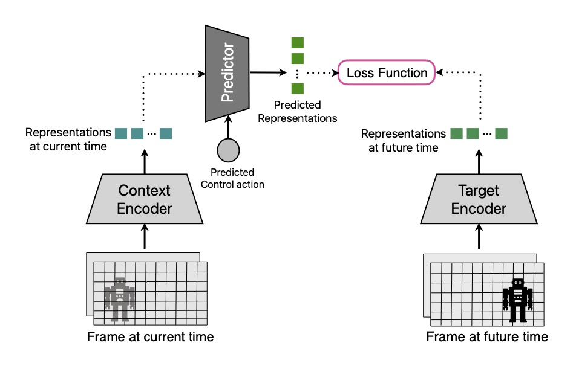

Representative
Time-Series JEPA for Predictive Remote Control under Capacity-Limited Networks
arXiv, 2024
A time-series joint-embedding predictive architecture that learns compact semantic representations from high-dimensional sensory observations and predicts future latent states for communication-efficient remote control.